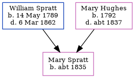

Harriet Ralph (née Spratt) c1832 -
[ Home ] | [ Calendar ] | [ Surnames Index ] | [ Census Index ] | [ Family History ]The child of William Spratt (a laborer) and Mary Hughes, Harriet Spratt, the three times great-aunt of Nigel Horne, was born in Kent, England c. 18321 and baptized in St Nicholas-at-Wade, Kent, England on Jul 22, 1832. She married Stephen Ralph there on Oct 12, 18572. On Jun 6, 1841, she was living at The Street in St Nicholas-at-Wade1.
Parents
- William was born on May 14, 1789
- Mary was born in 1792
Citations
- 1841 England, Wales & Scotland Census - Findmypast (was age 9)
- Kent, Canterbury Archdeaconry marriages 1538-1928 - Findmypast
Media
Kent, Canterbury Archdeaconry marriages 1538-1928 - GBPRS/CANT/M/97245523/2
England & Wales marriages 1837-2005 - BMD/M/1857/4/LZ/000787/015
England Marriages 1538-1973 - R_848282120/2
1841 England, Wales & Scotland Census Transcription - GBC-1841-0013960502
Family Tree
Generated by ged2site. Last updated on Jun 11, 2024